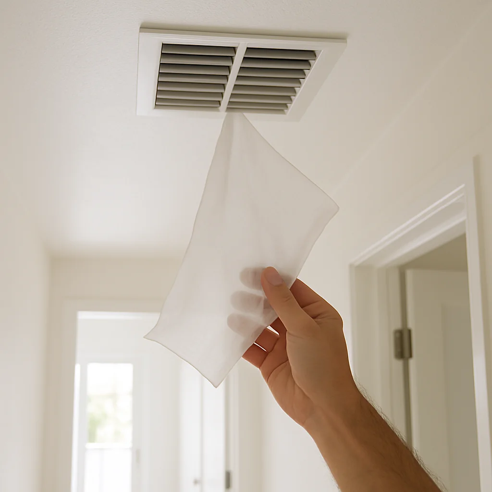
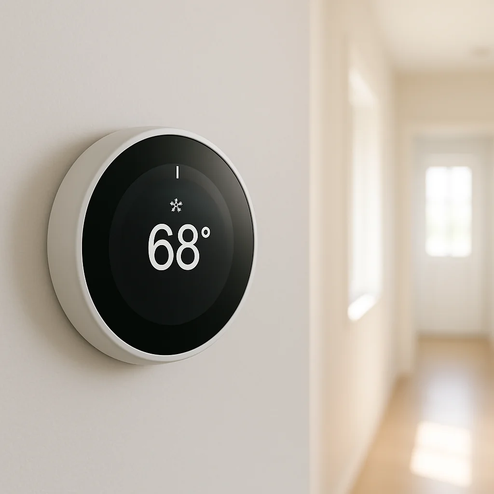
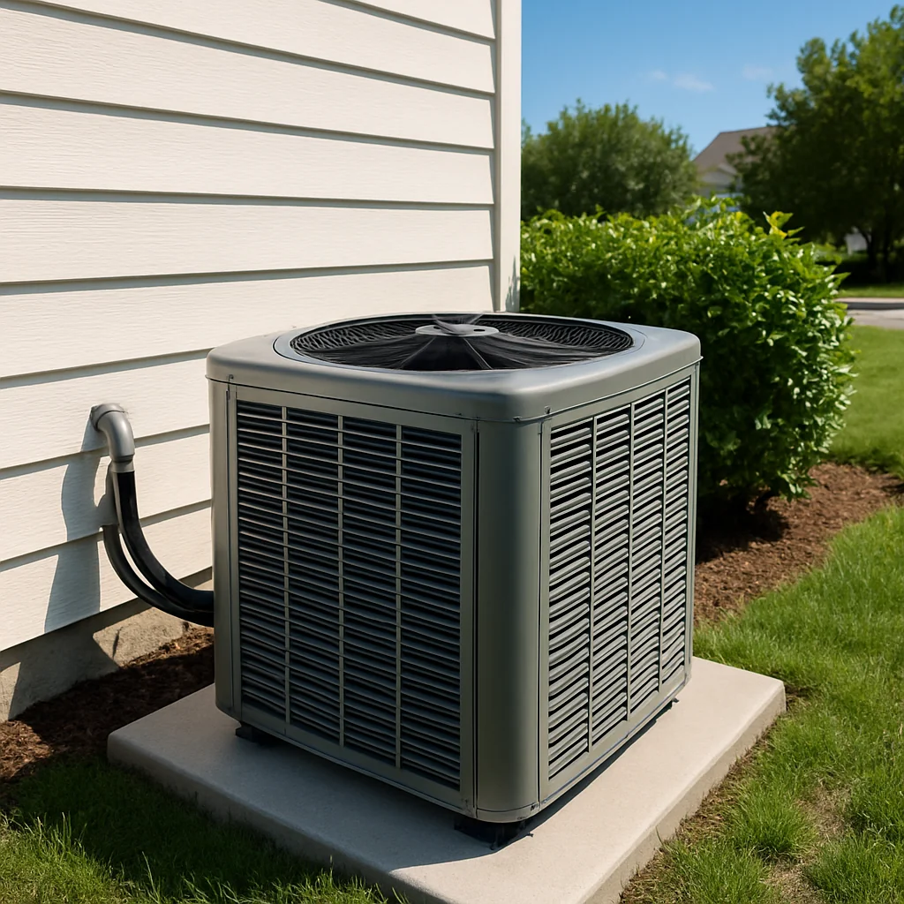

4 signs your AC is about to break down
Your air conditioner almost never fails out of nowhere — it usually drops a few hints first, and catching them early is the difference between a $200 fix and a $5,000 replacement.
I'm Fixa, and I see this every summer. A homeowner waits until the unit quits on a 95-degree afternoon, then pays emergency rates for a part that's been failing for weeks. The good news: AC systems are chatty before they go. Learn what to listen and look for, and you can call a fixer on a Tuesday morning instead of a Saturday at 6 p.m. Here are the four signs every homeowner should know.
1. Airflow that feels weak at the vents

Hold your hand over a supply vent on a hot day. The air should push out with real force — enough to lift a sheet of paper. If it trickles, something upstream is choking the system.
The usual suspects are a clogged air filter, leaky or crushed ductwork, or a tired blower motor. A neglected filter is the most common — and the most expensive to ignore. When the filter is packed, the system can't pull in enough warm air, the evaporator coil gets too cold, and ice forms. Ice blocks more airflow, the compressor works harder, and that's what kills the unit.
Swap the filter every 60 to 90 days — sooner if you have pets or run the system hard. If a fresh filter doesn't fix the weak airflow within a day, that's a fixer call. A blower motor or duct repair is usually in the $300 to $700 range. Letting it slide until the compressor goes is closer to $2,000.
2. Air that's running, but it's not actually cold

The fan is humming, the thermostat says 68, the room says 79. That's the signature of a system that's still trying but can't deliver — and nine times out of ten, the issue is refrigerant.
Refrigerant is the chemical that actually moves heat out of your house. It's supposed to circulate in a sealed loop forever, so if the level is low, there's a leak somewhere. You'll sometimes catch a faint hissing near the indoor coil or the lines outside. Other times the only clue is warm air at the vents and a layer of frost on the copper lines near the outdoor unit.
Don't try to "top off" the refrigerant yourself — it's federally regulated, and adding more without fixing the leak just wastes money and harms the environment. A licensed tech will find the leak, repair it, and recharge the system. Budget $200 to $600 for a small leak repair and recharge. If the leak is inside the evaporator coil itself, you're looking at coil replacement, which on an older system is often the moment to weigh repair against a new unit.
Warm air can also come from a failing capacitor — a small cylindrical part that helps the compressor start. Capacitors are cheap (around $150 to $400 installed) and one of the most satisfying fast fixes.
3. New noises you haven't heard before

A healthy AC has a steady hum and the whoosh of moving air. Anything else is the system trying to tell you something.
Here's the rough translation:
- A loud bang or clank when it kicks on usually means a loose part inside the compressor or a broken fan blade.
- A buzzing that comes and goes points to an electrical issue — often a failing contactor or capacitor.
- A high-pitched squeal or whistle is usually a worn belt or a motor bearing starting to give up.
- Grinding is the bad one. That's metal on metal, and it means a motor is on its way out.
- A soft hiss near the lines is the refrigerant-leak signal from the previous sign.
Short cycling counts as a noise complaint too — when the unit kicks off after a minute or two, then kicks back on. A normal cooling cycle runs 10 to 15 minutes. Short cycling usually points to low refrigerant, an oversized unit, or a thermostat that's drifted out of calibration. None get better on their own, and all shorten the compressor's life.
If the noise is new, jot down when it happens — startup, mid-cycle, shutdown — before you call. A fixer diagnoses twice as fast with that pattern in hand.
4. An electric bill that climbed without you doing anything different
Your utility bill is one of the most honest reports you'll get on your AC's health. If June's bill is 20 to 40 percent higher than last June, and you haven't added a hot tub or a new home office, the system is working harder to do the same job.
The hidden culprits are usually slow ones: a thin film of dust on the evaporator and condenser coils, a slightly low refrigerant charge, a blower motor running a hair slower than it should, or duct leaks that are dumping cooled air into your attic. Any one of these on its own might cost you ten percent in efficiency. Together, they can double your runtime.
There's also a useful rule of thumb on age. Most central AC systems run 10 to 15 years before efficiency drops off a cliff. If yours is past 12 and you're getting a $400 repair quote, ask the fixer to price both the repair and a replacement. The honest answer is sometimes "fix it for one more season," and sometimes "you'll save more in energy than the new unit costs in three years." A good fixer will tell you which one applies to your house.
When to call an HVAC pro
If you catch any one of these signs early, the visit is usually a quick diagnostic plus a single part — a couple hundred dollars and you're set for the season. If you wait until the unit dies on the hottest day of the year, you're paying emergency rates, you're stuck in a hot house overnight, and the failed compressor often drags other parts down with it.
A simple trigger to call: change the filter, give the system 24 hours, and if the symptom holds, book a service visit. Don't let "it's still kind of working" talk you out of a $150 diagnostic. That visit is the cheapest insurance you'll buy all summer.
What you can safely do yourself
Change filters, pull weeds and leaves away from the outdoor unit, keep two feet of clearance around it, and hose down the fins gently with a garden hose (power off first). Anything past that — opening panels, touching wiring, handling refrigerant — needs a licensed tech. AC systems run on 240 volts and capacitors hold charge even when powered down, so the DIY math doesn't favor you here.
If this is sounding like a one-call job, I can find you a background-checked HVAC fixer in your area and line up an honest estimate before anyone touches the unit. Catch the signs early, and a summer breakdown stays a summer tune-up.